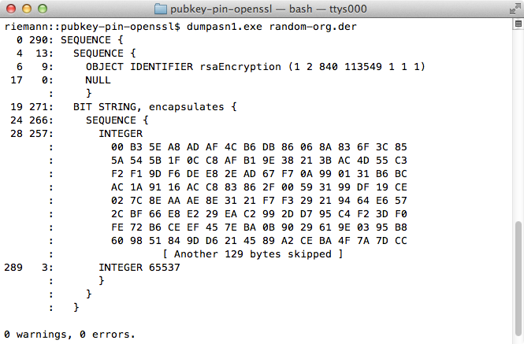

Introduction
The Pinning Cheat Sheet is a technical guide to implementing certificate and public key pinning as discussed at the Virginia chapter's presentation Securing Wireless Channels in the Mobile Space. This guide is focused on providing clear, simple, actionable guidance for securing the channel in a hostile environment where actors could be malicious and the conference of trust a liability.
A verbose article is available at Certificate and Public Key Pinning. The article includes additional topics, such as Alternatives to Pinning, Ephemeral Keys, Pinning Gaps, Revocation, and X509 Validation.
What's the problem?
Users, developers, and applications expect end-to-end security on their secure channels, but some secure channels are not meeting the expectation. Specifically, channels built using well known protocols such as VPN, SSL, and TLS can be vulnerable to a number of attacks.
What Is Pinning?
Pinning is the process of associating a host with their expected X509 certificate or public key. Once a certificate or public key is known or seen for a host, the certificate or public key is associated or 'pinned' to the host. If more than one certificate or public key is acceptable, then the program holds a pinset (taking from Jon Larimer and Kenny Root Google I/O talk). In this case, the advertised identity must match one of the elements in the pinset.
A host or service's certificate or public key can be added to an application at development time, or it can be added upon first encountering the certificate or public key. The former - adding at development time - is preferred since preloading the certificate or public key out of band usually means the attacker cannot taint the pin.
When Do You Pin?
You should pin anytime you want to be relatively certain of the remote host's identity or when operating in a hostile environment. Since one or both are almost always true, you should probably pin all the time.
When Do You Whitelist?
If you are working for an organization which practices "egress filtering" as part of a Data Loss Prevention (DLP) strategy, you will likely encounter Interception Proxies. I like to refer to these things as "good" bad guys (as opposed to "bad" bad guys) since both break end-to-end security and we can't tell them apart. In this case, do not offer to whitelist the interception proxy since it defeats your security goals. Add the interception proxy's public key to your pinset after being instructed to do so by the folks in Risk Acceptance.
How Do You Pin?
The idea is to re-use the exiting protocols and infrastructure, but use them in a hardened manner. For re-use, a program would keep doing the things it used to do when establishing a secure connection.
To harden the channel, the program would take advantage of the OnConnect callback offered by a library, framework or platform. In the callback, the program would verify the remote host's identity by validating its certificate or public key.
What Should Be Pinned?
The first thing to decide is what should be pinned. For this choice, you have two options:
- Pin the certificate.
- Pin the public key.
If you choose public keys, you have two additional choices:
- Pin the
subjectPublicKeyInfo. - Pin one of the concrete types such as
RSAPublicKeyorDSAPublicKey.
subjectPublicKeyInfo:

The three choices are explained below in more detail. I would encourage you to pin the subjectPublicKeyInfo because it has the public parameters (such as {e,n} for an RSA public key) and contextual information such as an algorithm and OID. The context will help you keep your bearings at times, and the figure to the right shows the additional information available.
Certificate
The certificate is easiest to pin. You can fetch the certificate out of band for the website, have the IT folks email your company certificate to you, use openssl s_client to retrieve the certificate etc. At runtime, you retrieve the website or server's certificate in the callback. Within the callback, you compare the retrieved certificate with the certificate embedded within the program. If the comparison fails, then fail the method or function.
There is a downside to pinning a certificate. If the site rotates its certificate on a regular basis, then your application would need to be updated regularly. For example, Google rotates its certificates, so you will need to update your application about once a month (if it depended on Google services). Even though Google rotates its certificates, the underlying public keys (within the certificate) remain static.
Public Key
Public key pinning is more flexible but a little trickier due to the extra steps necessary to extract the public key from a certificate. As with a certificate, the program checks the extracted public key with its embedded copy of the public key.
There are two downsides to public key pinning. First, it's harder to work with keys (versus certificates) since you must extract the key from the certificate. Extraction is a minor inconvenience in Java and .Net, buts it's uncomfortable in Cocoa/CocoaTouch and OpenSSL. Second, the key is static and may violate key rotation policies.
Hashing
While the three choices above used DER encoding, its also acceptable to use a hash of the information. In fact, the original sample programs were written using digested certificates and public keys. The samples were changed to allow a programmer to inspect the objects with tools like dumpasn1 and other ASN.1 decoders.
Hashing also provides three additional benefits. First, hashing allows you to anonymize a certificate or public key. This might be important if you application is concerned about leaking information during decompilation and re-engineering. Second, a digested certificate fingerprint is often available as a native API for many libraries, so its convenient to use.
Finally, an organization might want to supply a reserve (or back-up) identity in case the primary identity is compromised. Hashing ensures your adversaries do not see the reserved certificate or public key in advance of its use. In fact, Google's IETF draft websec-key-pinning uses the technique.
Examples of Pinning
This section discusses certificate and public key pinning in Android Java, iOS, .Net, and OpenSSL. Code has been omitted for brevity, but the key points for the platform are highlighted.
Android
Since Android N, the preferred way for implementing pinning is by leveraging Android's Network Security Configuration feature, which lets apps customize their network security settings in a safe, declarative configuration file without modifying app code.
To enable pinning, the <pin-set> configuration setting can be used.
If devices running a version of Android that is earlier than N need to be supported, a backport of the Network Security Configuration pinning functionality is available via the TrustKit Android library.
Alternatively you can use methods such as the pinning from OkHTTP in order to set specific pins programmatically, as explained in the MSTG and the OKHttp documentation.
The Android documentation provides an example of how SSL validation can be customized within the app's code (in order to implement pinning) in the Unknown CA implementation document. However, implementing pinning validation from scratch should be avoided, as implementation mistakes are extremely likely and usually lead to severe vulnerabilities.
Lastly, if you want to validate whether the pinning is successful, please follow instructions from the Mobile Security Testing Guide's ntroduction into testing network communication and the Android specific network testing.
iOS
TrustKit, an open-source SSL pinning library for iOS and macOS is available. It provides an easy-to-use API for implementing pinning, and has been deployed in many apps.
Otherwise, more details regarding how SSL validation can be customized on iOS (in order to implement pinning) are available in the HTTPS Server Trust Evaluation technical note. However, implementing pinning validation from scratch should be avoided, as implementation mistakes are extremely likely and usually lead to severe vulnerabilities.
Lastly, if you want to validate whether the pinning is successful, please follow instructions from the Mobile Security Testing Guide's introduction into testing network communication and the iOS specific network testing.
.Net
.Net pinning can be achieved by using ServicePointManager. An example can be found at the OWASP MSTG.
Download the .Net sample program.
OpenSSL
Pinning can occur at one of two places with OpenSSL. First is the user supplied verify_callback. Second is after the connection is established via SSL_get_peer_certificate. Either method will allow you to access the peer's certificate.
Though OpenSSL performs the X509 checks, you must fail the connection and tear down the socket on error. By design, a server that does not supply a certificate will result in X509_V_OK with a NULL certificate. To check the result of the customary verification:
- You must call
SSL_get_verify_resultand verify the return code isX509_V_OK; - You must call
SSL_get_peer_certificateand verify the certificate is non-NULL.
Download: OpenSSL sample program.
Electron
electron-ssl-pinning, an open-source SSL pinning library for Electron based applications. It provides an easy-to-use API for implementing pinning and also provides tool for fetching configuration based on needed hosts.
Otherwise, you can validate certificates by yourself using ses.setCertificateVerifyProc(proc).
References
- OWASP Injection Theory
- OWASP Data Validation
- OWASP Transport Layer Protection Cheat Sheet
- OWASP Mobile Security Testing Guide
- IETF RFC 1421 (PEM Encoding)
- IETF RFC 4648 (Base16, Base32, and Base64 Encodings)
- IETF RFC 5280 (Internet X.509, PKIX)
- IETF RFC 3279 (PKI, X509 Algorithms and CRL Profiles)
- IETF RFC 4055 (PKI, X509 Additional Algorithms and CRL Profiles)
- IETF RFC 2246 (TLS 1.0)
- IETF RFC 4346 (TLS 1.1)
- IETF RFC 5246 (TLS 1.2)
- RSA Laboratories PKCS#1, RSA Encryption Standard
- RSA Laboratories PKCS#6, Extended-Certificate Syntax Standard